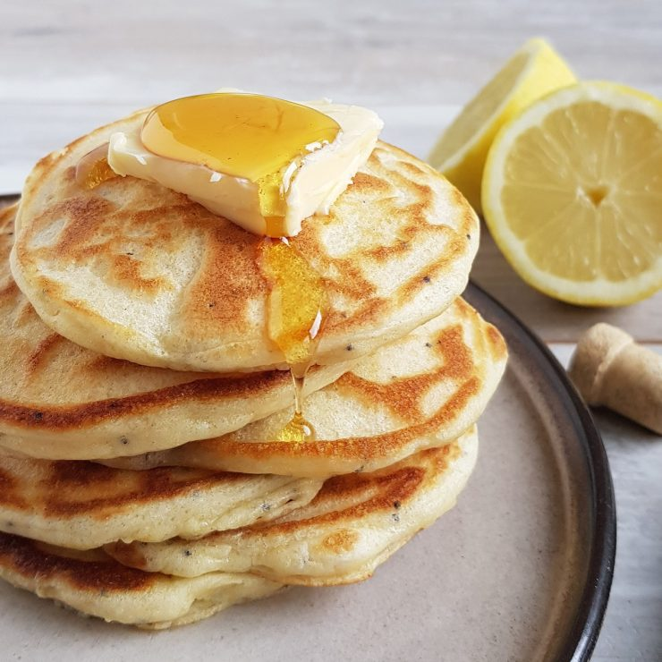

Traditional American Pancakes

Ingredients
- 1.5 (386g) cups milk
- 1 egg
- 2 cups (300g) all-purpose flour
- 1/4 cup (62g) granulated sugar
- 1 tsp (4g) salt
- 1/4 tsp (1g) baking soda
- 1 Tbsp (12g) baking powder
- 2 Tbsp (21g) melted butter
Steps
- In a small bowl, whisk together egg and milk.
- In a separate bowl, whisk and combine all-purpose flour with granulated sugar, salt, baking soda, and baking powder.
- Mix the dry ingredients with the wet ingredients while constantly whisking.
- While whisking add in melted unsalted butter. Whisk until combined. Rest for 5 minutes.
- Preheat a nonstick skillet over medium. Spray with spray oil or unsalted butter.
- Once hot spoon ¼” dollops of the pancake batter. Cook for 2-3 minutes or until golden brown on the bottom.
- Flip and cook for an additional 2-3 minutes. Repeat with the rest of the batter.
- Top with butter and drizzle with maple syrup to serve.
Back to Homepage